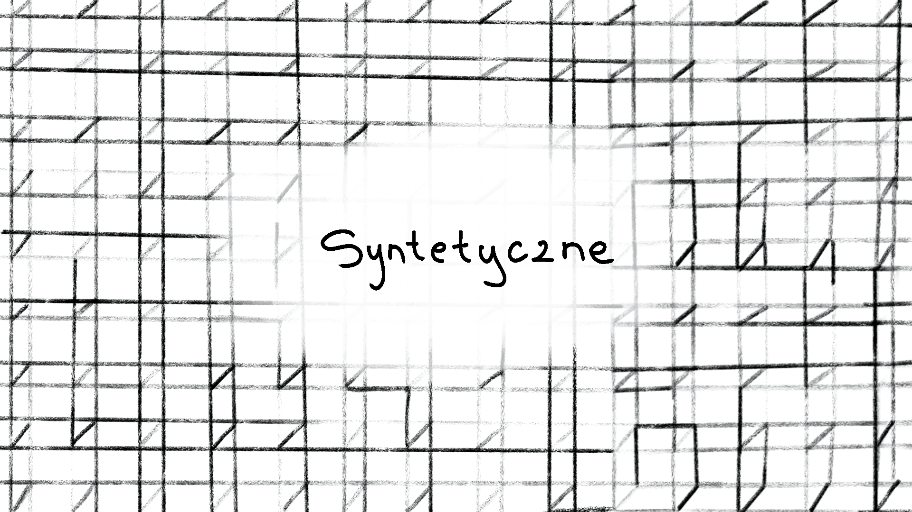

Od wczesnego modernizmu problem medium stawiany był w centrum zainteresowania przez artystów, poetów i filozofów, często stając się pretekstem do pogłębionych rozważań nad możliwościami i ograniczeniami komunikacji międzyludzkiej – dziś, kiedy kwestia kryzysu reprezentacji zdaje się już problemem zamierzchłym, niemal z innej epoki, medium wciąż interesuje młodych poetów i poetki, może nawet bardziej niż kiedykolwiek. Rzecz w tym, że to nie status ontologiczny reprezentacji jest współcześnie najwyższą stawką, ale jej niekończąca się multiplikacja. Rozwój technologiczny, który przez stulecia napędzany był przez imperatyw akumulacji kapitału, doprowadził do paradoksalnej sytuacji, w której to, co łączy społeczeństwo, jest jednocześnie tym, co najsilniej je dzieli. Trudno zatem dziwić się temu, że problem technologii tak mocno kształtuje wyobraźnię autorów. To, co nazwaliśmy “tkankami syntetycznymi”, dotyczy wszelkich form międzyludzkich połączeń, które stanowią sztuczny wytwór społeczny.
Bohaterka Julii Kusiak, która “zasypia z otwartymi kartami”, jest już postacią niemal cyborgiczną: tym, co sygnalizuje jej funkcje życiowe, nie jest oddech, temperatura ciała i akcja serca, ale tajemniczo migająca w ciemności kontrolka. W konsekwencji tego, sprawy podobnie mają się z lirycznym “ty”, do którego zwraca się układ wypowiedzenia, bo nie musi ono nawet istnieć w sensie empirycznym, aby w ogóle ukonstytuować się na planie kompozycji jako adresat – nie trzeba być, żeby “być na mailu”. Przestrzeń i czas tracą swoją rozciągłość, zostają skompresowane do mikrorozmiarów, życie nie odróżnia się już od swojego cyfrowego zapośredniczenia w kodzie binarnym, a rozmowa z botem do złudzenia przypomina rozmowę z żywym człowiekiem – dlaczego zresztą miałoby być inaczej, skoro niepostrzeżenie sami stajemy się botami? Jak pisał Slavoj Zizek, “[g]łówny problem ze sztuczną inteligencją nie polega na tym, że tekst wygenerowany przez chatbota możemy wziąć za słowa żywego człowieka. Gorzej będzie, gdy ludzie zaczną mówić jak chatboty” – ale czy w rozwoju dużych modeli językowych nie przekroczyliśmy już masy krytycznej?
Czytając zestaw Luly Sarniej można nabrać przekonania, że na wszelki opór jest już za późno. Charakterystyczne dla tych wierszy jest to, że nie przedstawiają one spotkania syntetycznego i organicznego – charakterystycznego dla historycznej awangardy – ale żywe ciało opisują językiem mechanistycznym, zupełnie jakby było białkowym tworzywem poddanym zabiegom inżynieryjnym. Ciało ma zatem swoją “klasę odporności”, ma swój “współczynnik pęknięcia” i “moduł sprężystości” – trudno o język chłodniejszy i bardziej surowy niż ten, który przynależy inżynierii materiałowej. Gdyby autorka chciała po prostu zderzyć go z dyskursem ludzkich namiętności, ostateczny efekt byłby całkiem przeciętny. Najciekawsze jest jednak to, że ów strukturalny dyskurs nadaje skrajnie utylitarny aspekt rozważaniom o naszych stanach emocjonalnych – można więc powiedzieć, że to kontekst historyczny nadaje nowatorskiego charakteru prezentowanym tu blokom wrażeń. Odczytywanie i parametryzowanie stanów duszy człowieka stało się w ostatnich latach przemysłem wartym ponad siedemnaście miliardów dolarów; jak pisze Kate Crawford: “dziś narzędzia do rozpoznawania afektów można spotkać w krajowych systemach bezpieczeństwa i na lotniskach, w edukacyjnych i rekrutacyjnych start-upach, w systemach wykrywających choroby psychiczne, a także w oprogramowaniu policyjnym, rzekomo przewidującym skłonność do przemocy”.
Właściwie tylko w utworze Julii Chruścik problem “tkanek syntetycznych” zostaje jednoznacznie ujęty na poziomie meta, a dzięki temu technologia staje się tu nie tylko poetyckim ornamentem, ale i przedmiotem pogłębionego krytycznego namysłu. Luddystyczna z ducha refleksja nad stanem współczesnej cywilizacji jest może nieco ironiczna, ale związane z nią ostre rozpoznania nie zostają przez to ani trochę stępione – na poziomie kompozycji tekstu relacja między ciałem i technologią jest utrzymywana w napięciu za sprawą pokusy anarchoprymitywistycznego buntu i życia bardziej pierwotnego. Mam wrażenie, że tego rodzaju eskapistyczne fantazje z największą siłą oddziałują na “zetki” – pokolenie rozczarowane przez własnych rodziców i nieufne wobec ich pustosłowia o postępie i przyszłym dobrobycie. Narzędzia, które miały nam służyć, pełnią dziś funkcję “aparatu retencyjnego”, który utrwala społeczne status quo, a tym samym uniemożliwia jakikolwiek skuteczny gest sprzeciwu. Trzeba jednak odnotować, że nie jest to wizja bezosobowej megamaszyny rodem z Lewisa Mumforda – aparat ekspresji wciąż mówi w liczbie pojedynczej, w ten sposób sytuując się na zewnątrz technologicznego molocha.
Alicja Łaska otwiera prezentowany wiersz słowami: “w ośmiuset stopniach dzieło sztuki stapia się z twoją skórą”. Przed stu laty rewolucyjna awangarda pragnęła za wszelką cenę znieść instytucjonalną autonomię sztuki, połączyć sztukę z życiem, podporządkować świat nowemu paradygmatowi estetycznemu. W galeriach zaczęto wystawiać ready-mades, a John Cage głosił, że prawdziwie nowoczesna kompozycja to taka, w której słuchaniu nie przeszkadza tramwaj przejeżdżający za oknem. Dziś fraza poetki budzi raczej uzasadnioną grozę niż fascynację, bo afirmowana dawniej “sztuczność” doskonale zasymilowała się z dominującym systemem gospodarczym. Wizja “stopienia się z urządzeniem” nie ma w sobie już ani śladu wyzwoleńczego potencjału, raczej przywodzi na myśl futurystyczne koszmary Williama Gibsona, które dziś zdają się coraz dokładniej pokrywać mapę rzeczywistości. Co ciekawe, owo stopienie się sztuki z życiem nie następuje w sposób naturalny, ale pod wpływem wysokiej temperatury – zasadne byłoby więc pytanie: kto stapia organiczne z syntetycznym? I kto zmyślił “tunel”, w którym “świecą przewody”?
Nie ukrywamy, że nasza decyzja, by osadzić wiersz Julii Garnysz w tym segmencie numeru, miała w sobie coś z kuratorskiej inicjatywy sensotwórczej – głębokie semantyczne złoża utworu stały się dla nas zupełnie oczywiste wtedy, gdy zestawiliśmy go z tekstami opisanymi powyżej. Postać Don Kichota wciąż działa tu jak alegoryczna figura tego, kto podejmuje się walki, choć jest z góry skazany na porażkę, ale sama walka nabiera walorów konkretu, zostaje uhistoryczniona i wpisana we współczesność. Mechanika alegorii jest trójpłaszczyznowa: dziecięca zabawa, która polega na rzucaniu piaskiem w zraszacze, nabiera bardziej uniwersalnej wymowy, kiedy skojarzy się ją z “walką z wiatrakami”; z kolei przygody oszalałego hiszpańskiego szlachcica stają się nośnikiem kolejnego tematu, ponownie zawężając uniwersalną wymowę do określonych uwarunkowań historycznych. Don Kichot stawia przecież czoła technologii, a zatem jego obłęd może nagle odsłonić się przed nami jako postawa w pełni zrozumiała, pomimo że antyracjonalistyczna. Czy o charyzmatycznej postaci Cervantesa nie moglibyśmy pomyśleć jako o protoluddyście, bohaterze romantycznym, a może nawet surrealistycznym? Jedno jest pewne: wymowa utworu Garnysz, tak jak i pozostałych tekstów, jest technopesymistyczna. Podmiotka “nie urodzi Don Kichota”.
Zuzanna Stasiak tytułuje swoje utwory skrótami typowymi dla komunikatorów internetowych, co samo w sobie jest gestem dość wymownym i naprowadza nas na sygnalizowany wcześniej wątek zmultiplikowanego zapośredniczenia. Pisze też o “zamkniętym obiegu informacji”, w którym “w rytmie wokeness / wellness rośnie wprost proporcjonalnie” – ta głęboko ironiczna konstatacja celnie oddaje charakter platformowych pułapek dopaminowych, które radykalnie wpływają na równowagę neurologiczną całych społeczeństw zachodnich. Gdy to ujęcie zostaje zestawione z literalnie potraktowanym idiomem o “gotowaniu żaby”, na pierwszy plan wychodzi głęboko krytyczna perspektywa podmiotu. Pod względem rozwiązań stylistycznych i rozpoznań nie jest to propozycja szczególnie nowatorska, ale przynajmniej jedna kwestia zasługuje na uwagę: u Stasiak żaba wie, że jest gotowana. Wiersz idzie zatem na zderzenie z paternalistycznymi formułkami lewicy o “fałszywej świadomości” klas pracujących i powszechnej nieumiejętności rozpoznawania własnych interesów. Poetce byłoby chyba bliżej do neuromarksistowskiej perspektywy, która w centrum swoich rozważań stawia postać ćpuna: podmiotu, który za sprawą wyniszczonego układu nerwowego nie potrafi wyjść z błędnego koła nałogu i z pełną świadomością działa na własną szkodę.
Wiersz Amelii Pudzianowskiej mocno różni się od pozostałych prezentowanych tu utworów, jest ascetyczny, niemal epigramatyczny – ale na jego pierwszy plan wysuwają się wątki, które interesują nas szczególnie. Z humorem i dystansem do własnych rozpoznań autorka pogrywa tu z kilkoma silnymi obrazami kulturowymi, rozwijając je i aktualizując w dość zaskakujący sposób. Po pierwsze, sytuacja liryczna przywodzi na myśl metafizyczne rozpoznania na temat iluminacji – rzecz w tym jednak, że boska iskra zostaje wygenerowana przez sztuczne światło lamp. Mechanika tej figury oparta zostaje zatem na przemieszczeniu jej nośnika, które natychmiast infekuje temat: nie czyni go niezrozumiałym, nieczytelnym, ale zwichniętym w swojej wymowie. “Oświecenie” całkowicie traci swój pierwiastek duchowy, staje się raczej efektem religijnego stosunku do scjentyzmu, który przynosi zbawienie przez racjonalizm. Drugi obraz kulturowy, jaki nasuwa się na myśl, dotyczy oczywiście idei prometejskich, które odegrały znaczącą rolę w akceleracjonistycznej narracji na temat technologii. Najciekawsze jest chyba jednak to, że w wierszu mamy do czynienia z zawieszeniem sądu: jego wymowa nie jest ani sceptyczna wobec nowoczesnego progresywizmu, ani technooptymistyczna – w niezwykłą jasność wpisane są dwa skrajnie odmienne scenariusze rozwoju społecznego.
Anna Maria Wierzchucka w swoich utworach jest chyba najbliżej poetyki neolingwistycznej, co nie oznacza, że opisywane powyżej wątki nie znajdują tu swojej reprezentacji. Wręcz przeciwnie, zostają one podjęte głównie za sprawą formalnych poszukiwań – język funkcjonuje na przecięciu tego, co naturalne i sztuczne. Jego postępująca deformacja, wręcz patologizacja, która jest efektem nieustannej walki brzmienia i znaczenia, wpisana jest w bardzo specyficzny kontekst – środowisko naturalne zaprezentowane jest tu nie tyle jako zanieczyszczone i skażone przez ingerencję człowieka, co raczej jako przestrzeń organiczno-syntetyczna, w której poszczególne części składowe nie poddają się już prostemu oddzieleniu. Cały ekosystem jest na swój sposób chimeryczny. Dlatego na dnie oceanu znajdziemy już nie tylko gwoździe, kable światłowodowe i niedopałki papierosów, ale też “mechanicznego sandacza”, który “rozkłada mikroplastik”. Dlatego też drony krążące po niebie okazują się “łase” na chleb i komunikanty. Jest w tych wierszach coś wyraźnie solarpunkowego, bo nie uświadczymy w nich alarmistycznego tonu, typowego dla ekopoetyckiej histerii – świat, który zostaje tu powołany do życia, jest raczej światem po katastrofie, w którym życie organiczne oswaja syntetyczny byt, oplata go ze wszystkich stron i podporządkowuje sobie.
„Symulacje i Symulakra”
Trudno mówić, by poezja komunikowała swoje sensy wprost, chociaż to oczywiście się zdarza, znaczenia zazwyczaj ukryte są za woalem, wymagają odkrycia i interpretacji. Teksty syntetyczne, tym woalem się bawią. Wiersze w tym dziale udają coś czym nie są, lub wręcz przeciwnie, stają się tym co pozornie jedynie udawały. Problem mediatyzacji, o którym wspominał Dawid odgrywa dużą rolę, w końcu jak mawiał McLuhan „Medium is the messege”, a technologia rzeczywiście znajduje się w centrum tych gier z autentykiem – nic dziwnego, to postęp technologiczny jest w dużej mierze odpowiedzialny za nastanie epoki postprawdy, która swoje odzwierciedlenie znajduje również w twórczości poetyckiej.
I tak utwory Chruścik i Garnysz są dla mnie jakby jednym i tym samym wierszem, ale rozgrywającym się na dwóch różnych poziomach symulacji. W obu utworach mamy do czynienia z jakąś wizją humanistycznego buntu przeciwko technice, ale to co u Garnysz, jest gorzką konstatacją „Nie urodzę Don Kichota”, u Chruścik jest przeciśnięte przez sito z ironii. Oba teksty w świadomy sposób rozgrywają swoją naiwność, Garnysz ostatecznie się jej wyzbywa, a Chruścik to właśnie w tej odfiltrowanej naiwności poszukuje rozwiązań. Z kolei w utworach Zuzanny Stasiak, Lulu Sarni i Alicji Łaski dostrzegam pewną próbę parametryzacji, języka, podmiotu i wiersza. Technika wdziera się w te utwory i próbuje zamienić wiersze w wykresy: „Wellness rośnie wprost proporcjonalnie”, „w ośmiuset stopniach dzieło sztuki stapia się z twoją skórą”, „struktura o nieznanej klasie odporności”, napięcie między językiem techniki i formą liryki staje w centrum uwagi, jednak ta pozorna precyzja wciąż pozostaje tylko zasłoną, za którą musimy zajrzeć. W jednym krótkim wierszu Amelii Pudzianowskiej udało się zawrzeć refleksję o sztuczności relacji słowa i desygnatów, tutaj również wkrada się technika, to właśnie sztuczne światło wymyka się procesowi nazywania, zasygnalizowany brak obnaża sztuczność nie tylko sytuacji lirycznej, ale i szerszego zjawiska, do którego się odnosi. U Julii Kusiak raczej niż słów, stechnicyzowanie dotyka podmiotu, który wchłania w siebie elementy technologii „śpię z otwartymi kartami”, karty zastępują tu oczy, a okna przeglądarki zostają jednymi oknami na świat. Z kolei Anna Maria Wierzchucka już doborem motta do wiersza „Zadrzewia” wzbudza w czytelnikach ostrożność, sygnalizuje, że to z czym będziemy mieli do czynienia będzie w jakiś sposób zmodyfikowane w stosunku do oryginału, modyfikacje, którym poddawana jest natura w tym wierszu rzeczywiście są posunięte tak daleko, że każą zakwestionować jej ontologiczny status: czy solarpunkowa natura wciąż zasługuje na to miano?